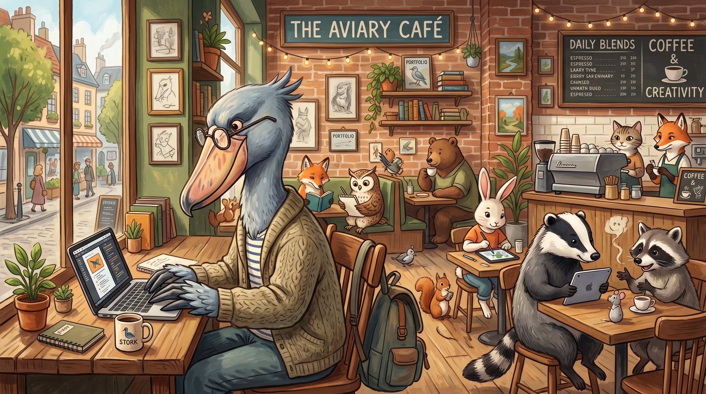
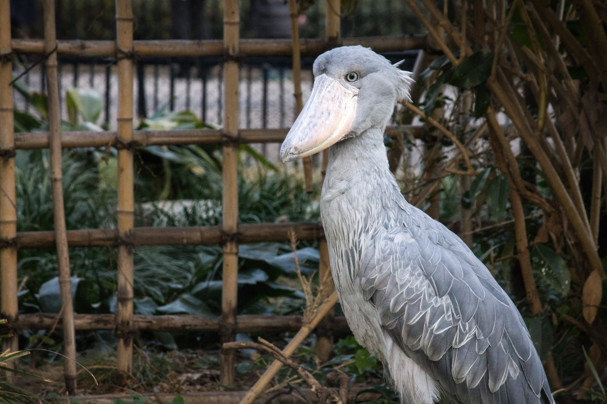

WEB DESIGN & DEVELOPMENT
Ryo Yokoyama's
Portfolio.
DESIGN / CODE / VISUAL
SCROLL
01 / SELECTED WORKS
Works制作実績
考えて、つくって、かたちにしたもの。
3つの分野からご覧いただけます。


02 / WHAT I DO
Skillsできること
見た目と使いやすさ、その両方を。
デザインから実装まで、丁寧に取り組みます。
01
コーディング
CODING
デザインを丁寧に再現し、読みやすく、使いやすいWebサイトへ。表示速度とレスポンシブ対応も大切にしています。
制作実績を見る02
Webデザイン
WEB DESIGN
目的に合わせて情報を整理し、伝わる構成を考えます。ブランドらしさと、迷わず使える導線を両立させます。
制作実績を見る03
画像制作
VISUAL DESIGN
Illustrator・Photoshopを使い、バナー、POP、アイコンを制作。文字組みや配色で、伝えたい印象を形にします。
制作実績を見る04
フロントエンド
FRONTEND
JavaScript・Reactによる動きのあるUIを実装。触れていて心地よく、毎日使いたくなる体験を目指します。
制作実績を見る
MY FAVORITE / SHOEBILL03 / A LITTLE ABOUT ME
About私について
Ryo Yokoyama
フリーランス Web制作者
HTML / CSS / JavaScriptによるフロントエンド実装と、Photoshop・Illustratorを活用したビジュアル制作に取り組んでいます。
「作って終わり」ではなく、見る人に想いが伝わることを大切に。静かに、じっくりと、一つひとつのものづくりに向き合います。
- HTML
- CSS
- JavaScript
- React
- Photoshop
- Illustrator
LET'S TALK
お話を聞かせてください。
制作のご相談も、作品へのご感想も。
お気軽にご連絡ください。